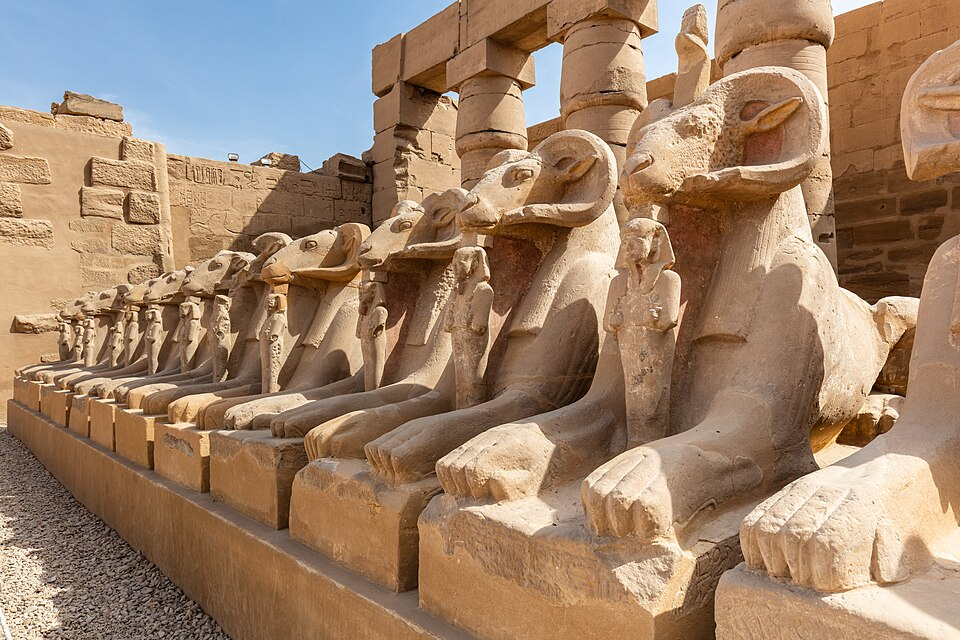

Карнак
Ипет-Сут — «избранное место» · дом Амона-Ра в Фивах · храм, который строили двадцать веков

Город бога
Карнак — не храм, а храм-город на восточном берегу Нила напротив современных Луксора: около двух квадратных километров святилищ, башен-пилонов, дворов, залов, хранилищ и священных озёр. Египтяне называли его Ипет-Сут, «избранное место»: здесь, у подножия фиванских гор, обрёл свой главный дом Амон — «скрытый», ставший с Среднего царства «царём богов», а с Нового царства — Амон-Ра, имперский бог-солнце. Первое святилище относится к Среднему царству (~2050 до н. э.), последним достройкам — эпоха Птолемеев: два тысячелетия фараоны не прекращали строить здесь, каждый — «в продолжение» предшественников, и редко снося чужое (титулы сменяли — стены оставались).
Что внутри
Комплекс состоит из обнесённых стеной храмовых «усадеб»: главная — усадьба Амона-Ра с аллеей баранийих сфинксов, ведущей к святилищу; к ней примыкают усадьбы Мут (львиноголовой владыки, в её дворе найден «клад» из сотен статуй) и Хонсу (бога-лунного «путешественника»), а также святилища Птаха, Осирида, Исиды-Ахет («Та, чей прекрасный дом»). Вход — в гигантский пилон I (37 м высоты), за ним — дворы, притворы и Большой гипостильный зал: 134 колонны, средние — 23 метра высотой, с капителями в раскрытый и нераскрытый папирус; Сети I начал, Рамсес II закончил; когда-то стены и колонны были раскрашены, а верхушки — вызолочены. За залом — залы праздников Тутмоса III («Ах-мену», с уникальными «растительными» рельефами чужих земель) и обелиск Хатшепсут из красного гранита — 29 с лишним метров, самый высокий сохранившийся обелиск Египта; рядом — «Священная ладья» из черного гранита в отдельной часовне, а на севере — священное озеро (примерно 120×77 м), где жрецы совершали омовения и где, по ритуалу, лунная ладья Хонсу совершала своё «плавание».
Как это работало
Храм был «домом» бога в самом буквальном смысле: статуя Амона-Ра в наосе внутри святилища, за дверями, которые отверзали по утрам; служение по часам — омовение, одежда, еда; запах благовоний. Раз в году (в опетский праздник) барка Амона совершала переход по аллее сфинксов — 2,7 км от Карнака до Луксорского храма, около тысячи бараньеголовых сфинксов (большинство — работы Аменхотепа III и Нактанеба I); бог «наведывал» свой «южный гарем», а фараон обновлял в этом переходе свою божественность. Всё остальное время Карнак был и «экономическим мозгом» Фив: храмовые хозяйства, амбары, мастерские, архивы — государство в государстве, жречество Амона к концу Нового царства фактически правила Верхним Египтом.